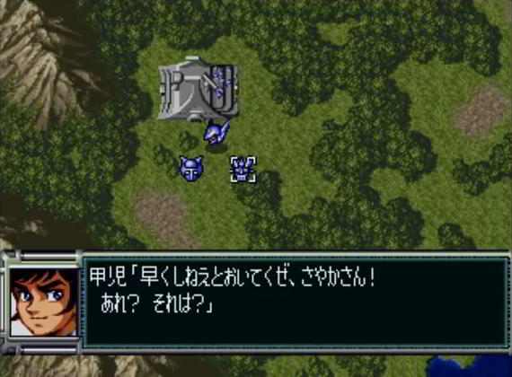
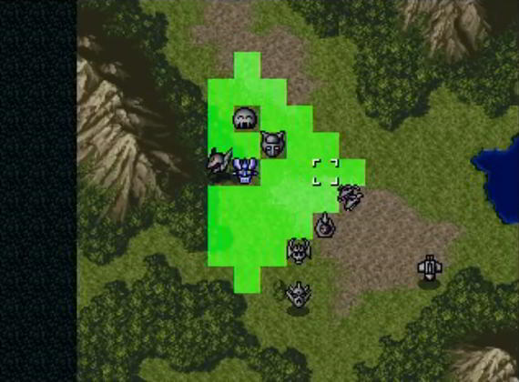
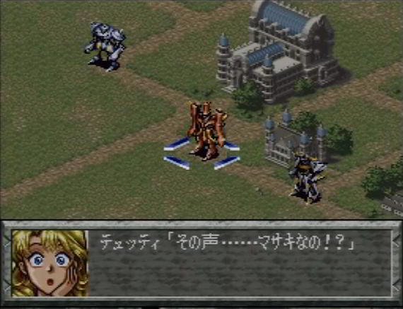
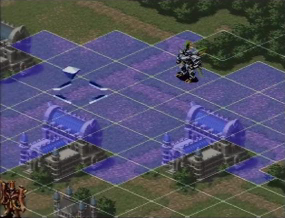

超級機器人大戰外傳
第四次超級機器人大戰後，又走 EX 路線出了外傳，單獨講述魔装機神サイバスター的故事，沒有其他動畫機器人。
由於故事、角色、機體都是原創的，無法像超級機器人大戰系列一樣獲得共鳴。但 45 度角地圖、修長比例的機身、表情豐富的駕駛員員，畫面比起前三款超級機器人大戰系列煥然一新…甚至跟 PlayStation 換湯不換藥的超級機器人大戰完結篇比也不遜色，其實是有不錯賣點的遊戲！值得一試～
遊戲後來獨立成魔裝機神系列，出了魔裝機神二代（PSP）、魔裝機神三代（PS3）、魔裝機神四代（PS3）、魔裝機神完結篇，基本上不被玩家視為超級機器人大戰系列，而是超級機器人大戰玩法的遊戲。但官方覺得這也是超級機器人大戰系列，必須補充關於魔装機神サイバスター的情節，銜接每一款新版超級機器人大戰的內容。
所以從超級機器人大戰的故事連接性來講，魔裝系列確實是系列作中不可抹滅的遊戲。
攻略
．スーパーロボット大戦 OG サーガ魔装機神 THE LORD OF ELEMENTAL 攻略 Wiki
早先在超級任天堂推出時，叫做《スーパーロボット大戦外伝魔装機神 THE LORD OF ELEMENTAL》，後來在 NDS 重製，官方重新命名為《スーパーロボット大戦 OG サーガ魔装機神 THE LORD OF ELEMENTAL》，歸類於 OG 系列（ORIGINAL GENERATION）。
但又有別於原本的 OG 系列，因此魔裝機神又叫 OG サーガ系列，原本的叫 OG 本編。
「為什麼要弄得這麼亂？」鋼彈迷就喜歡這一味啊 XD
跟鋼彈編年史比起來，超級機器人大戰系列的歷史算簡單了 XDDD
資料
畫面
首先來看次世代主機 PlayStation 的《超級機器人大戰完結篇》遊戲畫面：


然後來看超級任天堂的《超級機器人大戰外傳》遊戲畫面：


或許魔裝機神在內容和遊戲性都不如正傳，但那專注投入、精湛無比的美術，你不覺得應該「朝聖」看看，一睹大師級的風采嗎？